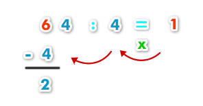
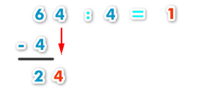
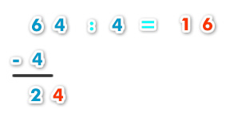
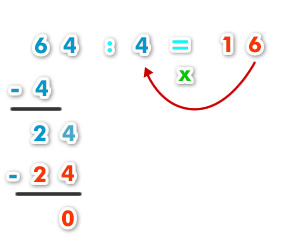

¿Te has dado cuenta que en más de alguna ocasión has tenido que dividir sin saber que lo estás haciendo? Por ejemplo, cuándo compartes un chocolate, o cuando en tu casa dividen la comida según la cantidad de habitantes.
La división está presente en varios ámbitos de nuestra vida y podríamos definirla como una operación aritmética de descomposición que consiste en averiguar cuántas veces un número (el divisor) está contenido en otro número (el dividendo).
Podemos decir entonces que la división forma parte de la aritmética y es inversa a la multiplicación.
Vamos a dividir 64 entre 4:
Lo que debemos hacer es tomar la primera cifra por la izquierda del dividendo.
Importante: Esa primera cifra que tomamos (en este caso el 6) tiene que ser igual o mayor que el divisor. Si fuera menor, tendríamos que tomar dos cifras (64).
Buscamos el número de la tabla del divisor (4) cuyo resultado más se aproxime a 6 sin pasarse. Ese número es 1, porque 1 x 4 = 4 (es el que más se aproxima a 6 sin pasarse).
El 2 no nos serviría porque 2 x 4 = 8 (se pasa).
Luego multiplicamos 1 x 4 y el resultado se lo restamos a 6.

La resta da 2.
Ahora bajamos la siguiente cifra del dividendo, el 4.

Volvemos a realizar el mismo proceso. Buscamos el número de la tabla del 4 cuyo resultado más se aproxime a 24 sin pasarse. Ese número es 6 porque 4 x 6 = 24 (entonces es el que más se aproxima a 24 sin pasarse).
El 7 no nos sirve porque 7 x 4 = 28 (se pasa)
El 5 tampoco nos serviría porque 5 x 4 = 20 (se aproxima menos que el 6)

Multiplicamos 6 x 4 y se lo restamos a 24.

La resta da 0.
Como ya no hay más cifras del dividendo que bajar la división ha finalizado.
El cociente es 16 y el resto es 0.
Nota: El resto puede ser:
- Cero (si la división es exacta), es decir todo el dividendo queda distribuido perfectamente entre el divisor y no sobra nada.
- Número distinto de cero, pero SIEMPRE menor que el divisor. Es la parte del dividendo que no se ha podido distribuir.